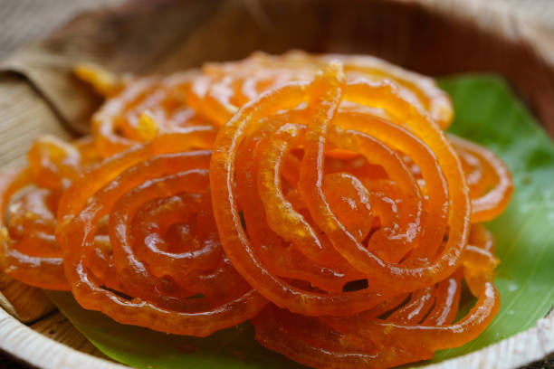

Jalebi

Jalebi
Jalebi is a popular sweet from the Indian cuisine. It is
sold in all mithai shops (sweet shops) and is also a popular street
food sold by cart vendors in western and northern Indian cities and towns.
Ingedients
- 3 cup all purpose flour
- 2 cup hung curd
- 1/2 cup ghee
- 3 cup sugar
- 5 strand saffron
- 1/2 teaspoon powdered green cardamom
- 1/2 cup corn flour
- 1 1/2 pinch baking soda
- 2 cup sunflower oil
- 3 cup water
- 4 drops rose essence
- 1/2 teaspoon edible food color
Steps
- Prepare the Jalebi batter and let it ferment overnight
- Deep fry the Jalebis
- Soak the Jalebis in sugar syrup and serve
Return to top
Home page